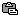
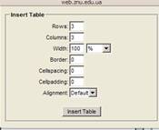
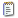
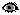

Як зайти на систему
керування сайтом?
- Відкрийте
сторінку http://web.znu.edu.ua/cms і введіть свій логін
і пароль. Якщо ви не маєте власного аккаунту,
зверніться до адміністратора. Не лякайтеся,
якщо в процесі роботи Вам пропонують
знову ввести логін і пароль – коли Ви
це зробите, всі зміни будуть збережені.
- Збоку на
місці поля для вводу пароля з’явилося
меню. Виберіть Перелік
сайтів
- Ви бачите
табличку з переліком сайтів, які Ви можете
адмініструвати. Біля кожного сайту є
кнопка з трьома крапками: . Натиснувши
її, Ви відкриваєте контекстне
меню сайту і
бачите все, що з цим сайтом можна зробити.
Увага!
Якщо контекстне меню не відкривається,
перевірте, чи у Вас в браузері
часом не заборонені яваскрипти.
- Вибирайте
потрібну позицію в переліку і редагуйте
сайт.
- Контекстне
меню сайту, над яким Ви почали працювати,
буде ліворуч, причому в самому низу сторінки
буде найперше меню
системи адміністрування,
вище – контекстне
меню сайту, а
ще вище – контекстне
меню сторінки, новини, фотогалереї і т.д. – залежно від
того, з чим Ви працюєте в даний момент.
- Можливо,
Вам зручніше користуватися російською
або англійською? Перемкніть мову. Перемикач
знаходиться у верхньому лівому кутку
сайту.
Що можна робити
за допомогою системи керування сайтом?
- Ви
можете створювати сторінки і час від
часу редагувати їх.
- Ви
можете зробити стрічку новин (одну або
декілька), які будуть відображатися на
окремій сторінці або в тому місці сторінки,
яке Ви вкажете розробнику сайту.
- Ви
можете робити кожну сторінку або новину
кількома мовами, якщо це було передбачено
під час створення сайту
- Ви
можете керувати фотогалерею і додавати
туди фотографії
- Ви
можете керувати форумом
- Ви
можете самостійно редагувати навігаційне
меню сайту
- Ви
можете зробити календар подій – ця функція
дозволяє показувати певну інформацію
на сайті у заздалегідь запланований період
часу, скажімо, у певні дні тижня або у
певні години вказаного числа.
- Якщо
при розробці сайту Ви замовили місце
для банера, ви можете самостійно додавати
нові банери, які будуть показуватися
на сайті у випадковому порядку при кожному
завантаженні.
- Якщо
це передбачено під час розробки сайту,
Ви можете робити опитування і переглядати
статистику відповідей.
- Якщо це передбачено
під час розробки сайту, Ви можете адмініструвати
Інтернет-магазин, де відвідувачі сайту
замовлятимуть через Інтернет Ваші послуги
чи продукцію.
Робота зі сторінками
Як знайти потрібну сторінку?
- Відкрийте
в контекстному меню сайту «Cторінки сайту». Тут лежить список
сторінок. Відразу відображаються останні
20 сторінок, решту можна знайти, пересуваючись
вперед-назад і за номерами внизу, під
списком.
- Кожна сторінка
має унікальний номер. Відкрийте сторінку
на сайті. В її адресному рядку відшукайте
номер, наприклад в цій сторінці з адресою
номер виділено: http://web.znu.edu.ua/NIS/508.ukr.html
- Над списком
сторінок у системі керування
сайтом є поле пошуку сторінки. Впишіть
номер у верхнє поле, позначене
символом # і натисніть «знайти»
- Зверніть увагу:
однакові сторінки різними мовами мають
один і той самий номер!
Як створювати сторінки?
- Відкрийте
контекстне меню сайту за допомогою
кнопки
- Виберіть
«створити сторінку»
- Ви потрапили
до таблички з переліком усіх Ваших сторінок.
Щойно створена сторінка називається
«нова сторінка». Відкрийте її контекстне
меню за допомогою такої ж кнопки
.
- Є два способи
роботи зі сторінками – «змінити
сторінку»
і «візуальний
редактор»
Змінити сторінку - як користуватися цим інструментом?
«змінити сторінку» - спосіб більш економний
і більш контрольований, але вимагає додаткових
знань, втім, не дуже складних. Вибираєте
працювати в такий спосіб? Якщо ні - перейдіть на «візуальний
редактор».
- Якщо Ви волієте
користуватися способом «змінити
сторінку», натисніть
цю позицію у контекстному меню сторінки.
- Заповніть
форму, вказавши назву сторінки, мову;
зробіть позначку «так», якщо сторінка,
яку Ви робите, головна і «ні» для всіх
інших сторінок; позначте дозвіл публікації.
- Увага! На
сайті завжди має бути одна головна сторінка
– не більше й не менше.
- Розділ «анотація»
для сторінок лишається порожнім, якщо
тільки під час створення сайту не було
іншої домовленості.
- У полі «основний текст» надрукуйте вміст
майбутньої сторінки. Також можна скопіювати
заздалегідь підготований текст.
- Починаємо
форматувати текст. У цьому допоможуть
кнопки, розташовані над полем «основний текст»
Кнопками
користуйтеся так: виділяйте текст,
до якого хочете застосувати форматування
і натискайте кнопку. Виняток –
розрив рядка і зображення, там просто
треба встановити курсор у бажане місце.
Після натискання кнопки з’являться елементи
HTML-коду, які й визначають вигляд того
чи іншого фрагменту веб-сторінки. Вони
мають вигляд <код>текст,
до якого застосовується форматування</код>.
- Якщо Ви хочете
вільно користуватися таким кодом і робити більше,
ніж дозволяє наш стандартний набір кнопок,
можете скористатися довідником з HTML http://html.manual.ru/
- Заголовок1,
заголовок2, загловок3
робить підзаголовки різного розміру.
Головний заголовок у Вас уже є – це назва
сторінки. Щоб зробити підзаголовок, виділіть
текст, який має бути підзаголовком і натисніть
одну з трьох кнопок: Заголовок1,
заголовок2, загловок3.
Пам’ятайте, чим менший номер, тим крупніший
буде текст у підзаголовку. Коли Ви натиснули
кнопку, навколо тексту заголовку з’являться
символи такого вигляду:
| Так
це виглядає під час форматування |
А так виглядатиме
на сайті |
<h1>Заголовок
1</h1>
<h2>Заголовок
2</h2>
<h3>Заголовок
3</h3>
|
Заголовок 1
Заголовок 2
Заголовок 3
|
Не
прибирайте їх, саме вони надають текстові,
розміщеному між ними, потрібного
формату.
- Нумерований
список, список з маркерами, пункт списку. Якщо Вам треба створити
список з підпунктами, виділіть весь
текст списку і натисніть одну з двох кнопок
– «нумерований список», якщо треба список
з номерами і «з маркерами», якщо потрібні
просто маркери біля кожного пункту. Потім
треба відокремити пункти один від одного:
виділити кожен і натиснути «пункт
списку». Увага!
Пильнуйте, щоб виділяючи текст, не захопити
нічого зайвого і навпаки, нічого не загубити.
Коли Ви все це зробите, виглядатиме так:
| Так
це виглядає під час форматування |
А так виглядатиме
на сайті |
<ol>
<li>Пункт 1</li>
<li>Пункт 2</li>
<li>Пункт 3</li>
</ol>
або
<ul>
<li>Пункт 1</li>
<li>Пункт 2</li>
<li>Пункт 3</li>
</ul> |
- Пункт 1
- Пункт 2
- Пункт 3
або
|
- Абзац.
Жирний шрифт. Курсив. Підкреслення. Розрив
рядка.
Поділіть
увесь текст на абзаци. Для цього,
виділяючи кожен абзац, натискайте
кнопку «Абзац». Також Ви можете виділяти
фрагменти тексту жирним, курсивом чи
підкресленням. Для цього виділяйте текст
і натискайте відповідну кнопку.
| Так
це виглядає під час форматування |
А так виглядатиме
на сайті |
| <p>Речення,
в якому є <b>важливі слова</b>.</p><p><i>Друге
речення</i>, яке починається з <s>абзацу</s>.</p> |
Речення,
в якому є важливі
слова.
Друге речення, яке починається
з абзацу. |
- Увага! Якщо, виділяючи текст,
Ви змушені захопити якийсь уже створений
елемент форматування, зверніть увагу,
щоб захоплені були і його відкриваюча,
і його закриваюча частини. Наприклад:
<p>Речення
з <s>абзацу</s>.</p> -
добре
<p>Речення
з <s>абзацу.</p></s> -
погано
Розрив
рядка може замінити
поділ на абзаци. Просто ставте його
в кінці кожного абзацу – і вийде те саме.
- Адреса
Інтернету –
якщо Вам треба додати на сторінку посилання
на інший сайт, на іншу сторінку Вашого
ж сайту, на електронну пошту або на файл,
виділіть слова, які Ви хочете зробити
посиланням, і натисніть кнопку «Адреса Інтернету». З’явиться текст
зразка: <a href="">Ваше посилання</a>.
Між лапками вставте адресу, куди має потрапити
користувач, натиснувши ці слова.
Якщо Вам
треба додати посилання на
Ваш власний документ,
натисніть слова «Малюнки
та інші файли».
Відкриється вікно зі списком усіх файлів,
які є на Вашому сайті. Внизу, під списком,
є форма для завантаження файлів.
- Увага! На завантаження файлів
є певні обмеження: він має важити не більше
10 мегабайт. Крім того, дозволено завантаження
тільки файлів певного типу: малюнки з
розширенням .jpg .gif .png і документи – повний
список дозволених форматів: doc jpg png gif
zip rar html htm rtf pdf css js txt djvu djv xml xsl ppt xls swf pml
cml
Завантаживши
файл, Ви можете вставити посилання
на нього, якщо натиснете кнопку 
.
Після цього
у формі «основний
текст» з’явиться
посилання на ваш документ, а якщо Ви додали
малюнок (з розширенням .jpg .gif .png), замість
посилання з’явиться цей малюнок.
Малюнок можна
лишити так, а можна зробити йому
обтікання текстом. Якщо хочете, щоб
малюнок обтікався текстом, додайте:
<img src="http://web.znu.edu.ua/NIS/malunky/patent.jpg" align=left> - малюнок притисне
до лівого краю сторінки.
<img src="http://web.znu.edu.ua/NIS/malunky/patent.jpg" align=right> - малюнок притисне
до правого краю.
- Вам треба
додати таблицю?
Таблиці утворюються
такими ж елементами форматування,
де одна частина ставиться перед
вмістом таблиці, а інша – після
вмісту. Таких елементів три: таблиця
<table>Весь вміст таблиці</table> <tr>Весь
вміст рядка</tr> <td>Весь вміст ячейки</td>.
| Так
це виглядає під час форматування |
А так виглядатиме
на сайті |
| <table
border=1>
<tr><td>1 ячейка</td><td>2
ячейка</td><td>3 ячейка</td></tr>
<tr><td>4 ячейка</td><td>5
ячейка</td><td>6 ячейка</td></tr>
<tr><td>7 ячейка</td><td>8
ячейка</td><td>9 ячейка</td></tr>
</table> |
1 ячейка 2 ячейка 3
ячейка
4 ячейка 5
ячейка 6 ячейка
7 ячейка 8
ячейка 9 ячейка
|
Візуальний редактор - як користуватися цим інструментом?
«Візуальний редактор» - спосіб менш контрольований,
менш економний, але більш звичний – він
нагадує роботу у програмі Microsoft Word. Вибираєте
працювати в такий спосіб? Якщо ні - перейдіть на «змінити сторінку».
- Якщо Ви волієте
користуватися способом «візуальний
редактор», натисніть
цю позицію у контекстному меню сторінки.
- Заповніть
форму, вказавши назву сторінки, мову;
зробіть позначку «так», якщо сторінка,
яку Ви робите, головна і «ні» для всіх
інших сторінок; позначте дозвіл публікації.
- Увага! На
сайті завжди має бути одна головна сторінка
– не більше й не менше.
- Розділ «анотація»
для сторінок лишається порожнім, якщо
тільки під час створення сайту не було
іншої домовленості.
- У полі «основний текст» надрукуйте вміст
майбутньої сторінки. Також можна скопіювати
заздалегідь підготований текст.
- Увага! Не
вставляйте текст з документу Microsoft Word
або з веб-сторінки. Інакше збережеться
частина його попереднього форматування
і сторінка може мати непередбачуваний
вигляд.. Якщо треба
додати великий масив тексту і не хочеться
його заново передруковувати, спочатку
скопіюйте його в текстовий редактор –
блокнот, щоб скинути форматування, а вже
звідти – у поле «основний текст»
- Починаємо
форматувати текст. У цьому допоможуть
кнопки, розташовані над полем «основний текст». Користуйтесь ними
так, як форматуєте текст у Microsoft Word.
- Кнопка
дозволяє додати посилання. Виділіть текст,
який плануєте зробити посиланням і натисніть
цю кнопку. Відкриється віконечко. У поле
URL вставте потрібну адресу і натисніть
кнопку з написом «Insert link»
- Якщо Вам
треба додати посилання на
Ваш власний документ,
натисніть слова «Малюнки
та інші файли».
Відкриється вікно зі списком усіх файлів,
які є на Вашому сайті. Внизу, під списком,
є форма для завантаження файлів.
-
Увага! На завантаження файлів
є певні обмеження: він має важити не більше
10 мегабайт. Крім того, дозволено завантаження
тільки файлів певного типу: малюнки з
розширенням .jpg .gif .png і документи .doc .pdf
.html .xsl .ppt .txt
Завантаживши
файл, Ви можете вставити посилання
на нього, якщо натиснете кнопку .
Після цього
у формі «основний
текст» з’явиться
посилання на ваш документ, а якщо Ви додали
малюнок (з розширенням .jpg .gif .png), замість
посилання з’явиться цей малюнок.
- Так само
малюнок можна вставити за допомогою кнопки
вставивши в поле URL адресу малюнку.

Де в поле rows вставляємо кількість рядків,
Columns - стовпчиків
Width – ширину таблиці в процентах
Border – товщину границь у таблиці (1 – звичайна, 0 – нема границь)
Наприкінці натискаємо Insert table і заповнюємо порожні ячейки.
- Як і в Microsoft
Word, можна скасовувати і повертати операції
за допомогою кнопок
і
- Закінчивши
форматувати текст, натисніть кнопку «зберегти».
- Виберіть
в контекстному меню сторінки «попередній
перегляд» і перевірте, чи все вийшло як
слід.
- Якщо Вас
все влаштовує, натисніть у контекстному
меню сторінки «експорт сторінки». Лише
після цього всі зміни будуть доступні
відвідувачам сайту.
Як змінити сторінку?
- В адресному
рядку сторінки є номер, який дозволить
Вам легко знайти її в списку сторінок.
Наприклад, як в адресі http://web.znu.edu.ua/NIS/508.ukr.html.
- В меню сайту
знайдіть і відкрийте «Cторінки
сайта».
- У верхнє
поле пошуку, де стоїть значок #, введіть цей номер
і натисніть пошук.
- За допомогою
кнопки
відкрийте контекстне меню сторінки і
виберіть один з двох способів редагування:
«змінити
сторінку»
або «візуальний
редактор».
Далі дійте відповідно до інструкції для
вибраного інструменту.
- Зберігши
зміни, не забудьте експортувати сторінку.
Як зробити,
щоб сторінка була кількома мовами?
- Щоб працювати
з кількома мовними версіями, Ви
маєте заздалегідь замовити цю функцію
під час розробки сайту. Надалі переклад
сайту Ви робите самостійно. Замовляйте
стільки мовних версій, скільки Ви готові
підтримувати! Система дозволяє до трьох
мовних версій.
- Якщо у вас
є одна мовна версія сторінки, для іншої
мови не створюйте окрему сторінку. В контекстному
меню сторінки є позиція «додати
переклад», користуйтеся
нею.
- Редагуйте
переклад через «візуальний
редактор»
або «змінити
сторінку»,
як Вам зручно.
- Не забудьте
виставити правильну мову.
- Збережіть
і експортуйте сторінку.
Як видалити
сторінку або тимчасово її сховати?
- Сторінку
можна видалити назавжди, а можна тимчасово
приховати. Виберіть, що Вам більше до
вподоби.
- Якщо Ви хочете
приховати сторінку, в контекстному меню
сторінки виберіть «забрати
для переробки».
Якщо в сторінці знову виникне потреба,
Ви її повернете, вибравши там же «дозволити публікацію».
- Якщо потреби
у сторінці вже нема, там же, в контекстному
меню сторінки, виберіть «знищити
сторінку».
- Якщо посилання
на сторінку є в навігаційному меню Вашого
сайту, Вам необхідно відредагувати також
і меню. Як це зробити написано в розділі
«Робота з
навігаційним меню сайту».
- Перевірте,
чи нема посилання на видалену сторінку
десь на інших сторінках сайту і приберіть
це посилання.
- Після всього
в контекстному меню сайту виберіть «експорт всіх сторінок».
Робота
з новинами
Як знайти потрібну
новину?
- Відкрийте
в контекстному меню сайту «Новини».
Тут лежить список новин. На першій сторінці
відображаються останні 20 новин, решту
можна знайти, пересуваючись між сторінками
(список сторінок під переліком новин).
- Кожна новина
має унікальний номер. Відкрийте новину
на сайті. В її адресному рядку відшукайте
номер, наприклад в цій новині з адресою
номер виділено:
http://web.znu.edu.ua/cms/index.php?action=news/view_details&news_id=355&lang=ukr
- Над списком
новин у системі керування
сайтом є поле пошуку новини. Впишіть
номер у верхнє поле, позначене символом
# і натисніть «знайти»
- Зверніть увагу:
однакові новини різними мовами мають
один і той самий номер!
Як додавати і
редагувати новини?
Робота з
новинами мало відрізняється
від роботи зі сторінками. Так
само є два інструменти на вибір – «візуальний
редактор»
і «змінити
сторінку».
Нові функції
і відмінності:
- В новинах
заповнюється анотація. Це та
частина новини, яка йде на
початку, виділяється жирним і повідомляє
головну ідею новини. Анотацію разом із
заголовком видно в списку новин, а основний
текст відкриватиметься за посиланням.
- В новинах
можна виставити не тільки
час початку публікації, але й
час завершення, після якого новина
буде прихована. Це зручно для анонсів
чи запрошень – щойно подія відбулася
або час запису на неї сплив, запрошення
зникає. Час завершення вибирається з
переліків: рік, місяць, день, година, хвилини.
Так само можна змінити час публікації:
затримати її до певного числа або поставити
заднім числом.
- Категорії
новин дозволяють мати на сайті
не одну стрічку новин, а
декілька, наприклад, окремо новини,
анонси, конкурси, місячні звіти
або іншу поточну інформацію.
Категорії слід заздалегідь встановити
під час розробки сайту, а потім
вибирати з готового списку.
- Теги –
це ключові слова, в них може
виникнути потреба, якщо новин
на сайті дуже багато. За ключовими
словами відвідувач може шукати
новини схожого змісту. Теги можна
писати через кому.
- Новини не
потрібно експортувати – вони відразу
з’являються на сайті.
Як видаляти і приховувати новини?
Порядок видалення,
приховування і повернення в публікацію
новин аналогічний до відповідних
дій зі сторінками.
Як створювати новини кількома мовами?
Порядок роботи
з кількома мовами у новин такий же,
як і у сторінок.
Як створити сторінку, яка міститиме блок новин?
Спосіб 1. Найпростіший спосіб
– коли формуєте меню
сайту, в
нижній частині переліку сторінок знайдіть
«Новини» - це і є блок усіх новин.
Спосіб 2. Якщо потрібно надати
стрічці новин якогось особливого вигляду,
більше можливостей дає такий спосіб:
- Створіть
нову сторінку, відкрийте її в режимі «змінити
сторінку»
дайте їй назву.
- Відкрийте
в контекстному меню сайту «Новини:HTML
код посилання».
- Відкриється
нове вікно. Вкажіть потрібні вам параметри
– мова, кількість новин, яку видно у списку
без заходу в архів, порядок сортування
– за датою або іншим параметром і категорію.
- Після цього
скопіюйте вміст блоку, що розміщений
нижче під заголовком «JavaScript
+ IFRAME», вставте
його на свою сторінку, збережіть і експортуйте.
- Увага!
Редагувати таку сторінку в режимі візуального
редактора
не можна!
Як редагувати сторінку,
яка містить блок новин
- Якщо Ви
хочете внести зміни в інформацію
в текст новини, прибрати або додати
деякі з них, Вам слід скористатися
посиланням «Новини» в контекстному списку
меню.
- Якщо Вас
не влаштовує назва сторінки з блоком
новин, відкрийте її через «змінити
сторінку»
і змініть назву.
- Якщо Вас
не влаштовує вигляд блоку новин, розташування
дати, посилання на весь список тощо, зверніться
до розробника.
Як зробити кілька
стрічок новин – скажімо, новини
і конкурси?
Для цього
існують категорії новин.
Найкраще
якщо Ви уже під час розробки сайту замовите
потрібні стрічки новин і покажете розробникові,
де вони мають стояти.
Ви можете
самостійно зробити сторінки, які міститимуть
не всю стрічку новин, а тільки новини
обраної категорії і внести їх до навігаційного
меню Вашого сайту. Для цього:
- В контекстному
меню сайту відкрийте «Категорії
сторінок та новин»
- Ви бачите
напис:
site root category. Натисніть кнопку і
відкрийте контекстне меню категорій.
- Виберіть
«створити
підкатегорію».
- Відкрийте
кнопкою
контекстне меню новоствореної підкатегорії
і виберіть «змінити»
- Впишіть назву
підкатегорії всіма мовами, які у Вас на
сайті є і збережіть. Пильнуйте, щоб назва
була проста і зрозуміла.
- Повторіть
пункти 3-5 для інших стрічок новин.
- Створіть
нову сторінку, відкрийте в режимі «змінити
сторінку»
і назвіть її так, як називається одна
з Ваших стрічок новин.
- У меню ліворуч
знайдіть «Новини:HTML
код посилання».
Відкриється нове вікно. На сірому тлі
виберіть потрібні параметри стрічки
новин – мова, кількість новин, яку видно
у списку без заходу в архів, порядок сортування
– за датою або іншим параметром і категорію.
Після цього скопіюйте весь вміст віконечка,
яке розміщене трохи нижче під заголовком
JavaScript + IFRAME і вставте його у поле «основний
текст» Вашої сторінки. Не лякайтеся його
вигляду, Вам не треба його розуміти.
- Збережіть
сторінку і експортуйте її.
- Увага!
Редагувати таку сторінку
в режимі візуального
редактору не можна!
- Внесіть
в меню Вашого сайту новостворену сторінку.
Як це зробити – в розділі «Робота
з навігаційним меню сайту».
- Повторіть
пункти 7-10 для інших стрічок новин.
Робота з навігаційним меню сайту
Що таке навігаційне меню Вашого сайту
Навігаційне
меню - це список сторінок
сайту, який
видно на кожній сторінці. Його мета –
полегшити орієнтацію на сайті і забезпечити
швидкий доступ до основних розділів сайту.
Як створити навігаційне меню
Меню створює
розробник сайту. Під час обговорення
технічного завдання Ви можете замовити
один і більше блоків меню.
Як змінити посилання
або текст у навігаційному
меню
- У контекстному
меню сайту виберіть пункт «Меню
сайту». (Не плутайте
з «Меню сторінки» таке меню видно тільки
на одній сторінці).
- Ви бачите
один або кілька блоків меню.
Кожне має назву і перелік
сторінок. Зверніть увагу, окремими
блоками стоять меню іншими
мовами.
- Знайдіть
рядок меню, який Ви хочете
змінити і натисніть кнопку
навпроти цього рядка. Виберіть «змінити»
- В полі
«Код HTML» внесено текст посилання.
Ви можете змінити цей текст. Увага! Не
чіпайте це поле, якщо
замість тексту в Вашому
навігаційному меню
графічні кнопки!
- В полі
«URL»
адреса, на яку посилається цей рядок меню.
Біля нього є кнопка з трьома крапками.
Якщо Ви натиснете на неї, відкриється
віконце з переліком усіх сторінок Вашого
сайту. Натисніть на потрібний – і в поля
«URL»
і «Код
HTML» буде внесено
дані вибраної Вами сторінки.
- Натисніть
кнопку «зберегти»
- Увага!
Якщо в полі «Додаткові
атрибути HTML»
щось вписано, не намагайтеся
його витерти чи змінити!
- Перевірте,
чи не треба аналогічну операцію
зробити з іншомовними блоками меню.
- Увага!
Після будь-яких операцій
з навігаційним меню
треба робити експорт
усіх сторінок.
Як видалити посилання
у навігаційному меню
- У контекстному
меню сайту виберіть пункт
«Меню сайту». (Не плутайте з «Меню сторінки» таке меню видно тільки
на одній сторінці).
- Ви бачите
один або кілька блоків меню.
Кожне має назву і перелік
сторінок. Зверніть увагу, окремими
блоками стоять меню іншими
мовами.
- Знайдіть
рядок меню, який Ви хочете
змінити і натисніть кнопку
навпроти цього рядка. Виберіть «знищити».
- Перевірте,
чи не треба аналогічну операцію
зробити з іншомовними блоками
меню.
- Увага!
Після будь-яких операцій
з навігаційним меню
треба робити експорт
усіх сторінок.
Як змінити порядок
посилань у навігаційному меню
- У контекстному
меню сайту виберіть пункт
«Меню сайту». (Не плутайте з «Меню сторінки» таке меню видно тільки
на одній сторінці).
- Ви бачите
один або кілька блоків меню.
Кожне має назву і перелік
сторінок. Зверніть увагу, окремими
блоками стоять меню іншими мовами.
- Перший
спосіб. Знайдіть
рядок меню, який Ви хочете переставити
вище або нижче. Біля нього є стрілочки,
спрямовані вниз або вгору. Натискаючи
ці стрілочки, Ви переміщуєте рядок вгору
або вниз.
- Другий
спосіб. Праворуч
від стрілочок є поле з цифрою 0, там можна
пронумерувати рядки меню в бажаному порядку.
Наприкінці слід натиснути кнопку «Відправити».
- Увага!
Після будь-яких операцій
з навігаційним меню
треба робити експорт
усіх сторінок.
Як додати посилання
у навігаційне меню
- Увага! Якщо
замість тексту в Вашому
навігаційному меню
графічні кнопки, зверніться
з приводу редагування
навігаційного меню
до розробника сайту!
- Навпроти
заголовку кожного блоку меню
є кнопка
, натисніть її і виберіть «створити
пункт».
- Натисніть
кнопку
навпроти новоствореного рядка. Він називатиметься
«Новий пункт» Виберіть «змінити»
- В полі
«Код HTML» внесено текст посилання.
Ви можете змінити цей текст.
- В полі «URL»
адреса, на яку посилається цей рядок меню.
Біля нього є кнопка з трьома крапками.
Якщо Ви натиснете на неї, відкриється
віконце з переліком усіх сторінок Вашого
сайту. Натисніть на потрібний – і в поля
«URL»
і «Код
HTML» буде внесено
дані вибраної Вами сторінки.
- Натисніть
кнопку «зберегти»
- Перевірте,
чи не треба аналогічну операцію
зробити з іншомовними блоками
меню.
- Увага!
Після будь-яких операцій
з навігаційним меню
треба зробити експорт
усіх сторінок.
Робота
з галереєю зображень
Як створити галерею
зображень?
Галерею створює
розробник сайту. Це може бути фотоальбом,
портфоліо Ваших графічних робіт
абощо. Галерея зображень може містити
довільну кількість розділів і підрозділів
будь-якої глибини.
Як додавати зображення
в галерею?
- Підготуйте
свої зображення:
- їхня ширина
має бути 400-500 пікселів, не більше. Проконсультуйтеся
з розробником, щоб дізнатися параметри
для свого сайту. У нього ж можна дізнатися,
як зменшити зображення, якщо Ви не знаєте,
як це робиться.
- зображення
мають бути у форматі jpg, gif або png
- назва кожного
файлу не повинна містити нічого крім
латиничних літер, цифр, дефісу або нижнього
підкреслювання.
- Виберіть
в контекстному меню сайту «Додати
зображення».
- Ви бачите
форму яка дозволяє послідовно додати
до 5 зображень.
- Завантажте
файл у поле «Завантажити
файл» Ваше зображення.
Зменшене зображення, автор, підпис –
необов’язкові поля, заповнюйте їх за
бажання.
- «Категорія» показує, в який розділ
галереї слід помістити фото.
- Якщо це поле
порожнє, фото буде у корінній папці, його
прев’ю буде видно відразу, коли зайдеш
у галерею.
- Якщо у полі
вказана назва папки, фото лежатиме у папці
з такою назвою. Зверніть увагу! Уважно
вводьте, а краще копіюйте вміст цього
поля, якщо Ви десь зробите помилку, Ваше
фото опиниться в іншій папці.
- Після завантаження
першої пачки зображень папки, які Ви зазначили,
будуть іти списком після поля «Категорія». Тепер Вам вже не потрібно
вписувати цю папку, достатньо натиснути
на її назву – вона впишеться сама.
- Якщо Вам
треба зробити складну, багаторівневу
структуру галереї, розділяйте папки скісною
рискою «/». Наприклад напис в
полі «Категорія» такого типу: 2011 рік/лютий/Конференція
означає, що
в галереї буде папка «2011», в
папці «2011» буде папка «лютий»,
в папці «лютий» буде папка
«Конференція», а в папці «Конференція»
лежатимуть Ваші зображення.
- Таким же
чином додайте решту зображень
(можна до 5 за 1 раз)
- Натисніть
кнопку «Зберегти» внизу сторінки.
Як редагувати зображення в галереї?
- Якщо проблема
з самим зображенням, його слід видалити
і завантажити нове в ту ж категорію.
- Якщо треба
змінити дані фотографії, зайдіть до розділу
«Зображення» контекстного меню
сайту (ліворуч).
- Виберіть
«Змінити підпис» навпроти потрібного
зображення.
- Відредагуйте
його і натисніть кнопку «Зберегти»
Як видалити зображення з галереї?
- Зайдіть
до розділу «Зображення» контекстного меню
сайту (ліворуч).
- Навпроти
кожного зображення в кінці
рядка є поле, де можна поставити
галочку. Позначте галочкою фото,
які хочете видалити.
- Натисніть
кнопку «Видалити
відмічені зображення» під таблицею.
Як додавати фрагменти
галереї на сторінку
1 спосіб:
- Якщо Вам
треба додати окремі
фото, скопіюйте
код з поля «Іконка
та посилання на великий
малюнок» або «Великий
малюнок» залежно від Ваших бажань.
- Відкрийте
сторінку, в яку Ви хочете помістити зображення,
в режимі «Змінити
сторінку»
- Знайдіть
місце тексту, біля якого Ви хочете розташувати
зображення і вставте туди код. Увага! Сміливо
вставляйте його між
словами, текстові це
не зашкодить, але не
зачіпайте елементи
коду, особливо, якщо
не знаєте, що вони означають.
2 спосіб:
- Якщо Ви хочете
додати цілу
папку, виберіть
у контекстному меню сайту «HTML
код для вставки галереї в сторінку»
- Відкрийте
потрібну Вам папку з зображеннями.
- Ви побачите
поле з кодом. Скопіюйте цей код повністю.
- Відкрийте
потрібну сторінку в режимі «Змінити
сторінку»
- Знайдіть
місце, де Ви хочете розташувати фрагмент
галереї і вставте туди код. Краще зробити
це в самому кінці сторінки.
- Увага!
Редагувати таку сторінку
в режимі візуального
редактору не можна!
Робота
з форумом
Як створити форум?
Як він побудований?
Форум створює
розробник сайту. За Вашим бажанням
він може бути модерованим (все, що напишуть
відвідувачі, відразу буде видно) і немодерованим
(те, що пишуть відвідувачі відкриваєте
для загального перегляду Ви)
Незалежно від
того, який тип Ви оберете, якщо Ваш
сайт – частина сайту університету,
Ви покладаєте на себе обов’язок постійно
стежити за форумом, контролювати його
вміст, вчасно відповідати на запитання
і видаляти некоректні вислови.
Форум має таку
структуру: Форуми (розділи
форуму, які створює модератор
сайту, тобто, Ви) містять дискусії (їх
може створювати як модератор так і відвідувачі,
зареєстровані і незареєстровані). Дискусії
містять перше повідомлення і повідомлення-відповіді
від модератора і відвідувачів, зареєстрованих
і незареєстрованих.
Схема. Приблизна
структура форуму
Форум 1
Дискусія 1
- Повідомлення
1
- Відповідь
1
- Відповідь
2
Дискусія 2
- Повідомлення
1
- Відповідь
1
Форум 3
Дискусія 1
Дискусія 2
- Повідомлення
1
- Відповідь
1
- Відповідь
2
- Відповідь
3
Дискусія 3
Як запустити
форум?
Ви маєте створити
кілька розділів, кожен з якіх буде присвячений
окремий темі, цікавій для відвідувачів
Вашого сайту.
Для цього
- натисніть
«Створити
форум»
- Введіть назву
розділу форуму і опис, який пояснюватиме
докладніше його майбутній вміст.
- Виберіть,
модерований буде даний розділ чи ні.
- Натисніть
«зберегти»
- Після цього
відвідувачі зможуть писати повідомлення
у Ваш форум.
Як наглядати
за форумом і модерувати його?
- В контекстному
меню сайту виберіть «Пошук
повідомлень у форумах»
- На цій сторінці
повідомлення від відвідувачів будуть
іти списком, починаючи від останніх.
- Якщо Ваш
форум немодерований
– Ваша задача регулярно перевіряти, чи
нема на форумі небажаних повідомлень
– ненормативної лексики, агресивних
суперечок між відвідувачами, наклепів
та образ тощо. Також Ваша задача відповідати
на запитання відвідувачів і підтримувати
зворотній зв'язок.
- Якщо Ваш
форум модерований
– Ваша задача вчасно відкривати нові
повідомлення, якщо вони не містять небажаного
змісту. Поки Ви не відкриєте нові повідомлення,
їх не буде видно на сайті і це може викликати
незадоволення відвідувачів.
Як відповісти на
повідомлення?
- В контекстному
меню сайту виберіть «Пошук
повідомлень у форумах»
- Біля кожного
повідомлення є кнопка
, яка відкриває контекстне меню повідомлення.
- Виберіть «Відповісти»
- Якщо Ви
увійшли в систему керування
сайтом, форум розпізнає Вас як
зареєстрованого користувача і
сам вводить Ваш нікнейм і
e-mail. За бажання Ви можете змінити цю інформацію
вручну. Поле e-mail не лишайте порожнім!
- Заповніть
поля «Заголовок» і «Текст
повідомлення» і натисніть «Зберегти»
Як видалити небажане повідомлення з немодерованого форуму?
- Ви можете знищити
повідомлення назовсім або лишити його
видимим тільки для себе, прибравши з сайту.
- Для знищення в
контекстному меню повідомлення за кнопкою
виберіть «Знищити». Для приховування
там же оберіть «Зробити
невидимим»
- Увага!
Якщо Ви видаляєте перше повідомлення
дискусії, то видаляється вся дискусія!
Як дозволити
публікацію новому повідомленню на модерованому
форумі?
В контекстному
меню повідомлення за кнопкою
виберіть «зробити
видимим»
Робота з календарем подій
Як створити календар подій?
- Календар
створює розробник сайту. За Вашим бажанням
календар може відображати на сайті певну
інформацію у вигляді картинки з посиланням
або просто тексту. Ця картинка або
текст будуть з’являтися на сайті строго
в призначений час, одноразово або з періодичністю,
запланованою заздалегідь.
- Так Ви можете
повідомляти, скажімо, що триває інтернет-конференція
або публікувати інформацію про визначні
події, які відбулися в цей день, або
ж публікувати розклад певного заходу
на поточний день у форматі «зараз відбувається…»
- Є два варіанти
календаря:
- на поточний
день
- на поточний
момент.
- Який календар
буде встановлено Вам і де саме він буде
розташований, Ви маєте з’ясувати з розробником
сайту на етапі планування технічного
завдання на сайт.
- Ви можете
додавати і видаляти події
Як додати подію?
- В контекстному
меню сайту зайдіть на «Керування
подіями» і натисніть
«Додати подію».
- В поле «Назва події» внесіть текст, який
Ви очікуєте побачити на сайті.
- Якщо згідно
з технічним завданням в режимі календаря
має показуватися зображення, в поле «Адреса файлу - ілюстрації» додайте адресу зображення,
завантаженого заздалегідь у файли. (Як
завантажувати у файли можна прочитати
у розділі «Робота
зі сховищем файлів»).
В іншому разі лишіть поле порожнім.
- Якщо згідно
з технічним завданням в режимі календаря
передбачене посилання на певну сторінку,
в поле «Адреса
сторінки» введіть
посилання на цю сторінку. В іншому разі
лишіть поле порожнім.
- Вкажіть часові
рамки початку події, читаючи підписи
до полів і вибираючи потрібне. Заповнюйте
тільки ті поля, які Вам потрібні. Скажімо,
якщо подія має відображатися на сайті
з року в рік по понеділках з 9 до 10 ранку,
пропустіть усі поля крім дня тижня, годин
і хвилин.
- Вкажіть часові
рамки завершення події у такий же спосіб.
- Натисніть
кнопку «Відправити».
Як видалити або
приховати подію?
- В контекстному
меню сайту зайдіть на «Керування подіями».
- Ви бачите
до 20 подій, решту можна знайти,
пересуваючись сторінками (перелік
сторінок під таблицею). Знайдіть
потрібну подію.
- Ви можете
приховати подію. Тобто, в таблиці
вона лишиться, а відвідувачі
сайту її не бачитимуть. Для
цього натисніть на око навпроти.
Око заплющиться. Щоб зробити
подію знову видимою, ще раз
натисніть на заплющене око.
Воно розплющиться і подія
стане видима.
- Щоб видалити
подію назавжди, поставте галочку
навпроти непотрібних подій і
натисніть кнопку «Видалити
відмічене» під
таблицею.
Як редагувати подію?
- В контекстному
меню сайту зайдіть на «Керування подіями».
- Ви бачите
до 20 подій, решту можна знайти, пересуваючись
сторінками (перелік сторінок під таблицею).
Знайдіть потрібну подію.
- Натисніть
кнопку
і виберіть «Calendar_edit_event»
- Внесіть
потрібні зміни і натисніть
кнопку «Відправити».
Як знайти потрібну подію в системі керування?
Зайдіть на «Керування подіями». Над списком подій Ви бачите форму пошуку. Ви можете шукати події за будь-яким полем, яке Ви самі вводили: за назвою, за роком, місяцем, днем тижня чи то годиною початку або кінця події. Увага! Ви не можете шукати події за часовим проміжком, скажімо, якщо подія починається в понеділок і завершується в середу, в пошук треба вводити понеділок у блоку "start" або середу у блоку "finish", пошук за вівторком не дасть результатів.
Значення полів:
- id - автоматичний порядковий номер події
- title - назва повністю
- блок start - початок події і блок finish - кінець події
- year - рік
- month - місяць
- day - день
- weekday - день тижня
- hour - години
- minute хвилини
Робота
з банерами
Для чого потрібні
банери і як розмістити їх на своєму сайті?
Банери –
це рекламні блоки.
Способи застосування
і цілі інструменту «банерний
показ»:
- Показ банерів
дозволяє заробляти на відвідувачах, якщо
відвідуваність сайту передбачається
дуже висока.
- Можна обмінюватися
банерами з іншими сайтами і рекламувати
одне одного.
- Можна рекламувати
власні послуги, події тощо.
- Можна зробити
інформаційний блок, де при кожному завантаженні
з’являється випадкове зображення –
безвідносно до реклами.
Показ банерів
підключає розробник сайту, якщо це було
вказано у технічному завданні на сайт.
У технічному
завданні необхідно:
- Вказати
розміри зображення. Існують стандартні
розміри (в пікселях): 468x60, 468x40, 234х60,
120х60, 88x31. Виберіть той, який відповідає
вашим потребам.
- Бажане місце
розташування блоку.
- Якщо Ви
підключаєте чужі банери, необхідно
надати їх разом з адресами
сайтів, на які вони мають посилатися.
Як додати банер?
1 спосіб. Зверніться до розробника.
2 спосіб. Зайдіть на сторінку
«Banner rotator» і скористайтеся розміщеною
там інструкцією.
Як видалити банер?
1 спосіб. Зверніться до розробника.
2 спосіб. Видаліть html-сторінку
з кодом непотрібного банера з папки banners.
Цю папку Ви знайдете, зайшовши за посиланням
«Файли сайту» у контекстному меню
сайту.
Робота
з Інтернет-магазином
Для чого потрібен
інтернет-магазин і як розташувати
його на своєму сайті?
Інтернет-магазин
дозволяє відвідувачам сайту робити
через Інтернет замовлення Ваших
продуктів та послуг, платних чи
безкоштовних, записуватися на конференції,
майстер-класи, семінари тощо. Інформацію
про замовлення Ви отримаєте не тільки
через систему керування сайтом, але й
на електронну пошту.
Роблячи замовлення,
відвідувач сайту не оплачує відразу,
а тільки повідомляє про своє бажання
замовити Ваш продукт чи послугу і надає
свої координати. Після цього Ви зможете
в приватному порядку повідомити замовнику,
де, коли і в який спосіб можна оплатити
і отримати своє замовлення.
Інтернет-магазин
підключає розробник сайту, якщо
це було вказано у технічному завданні
на сайт. В контекстному меню сайту цей
блок називається «Речі»
Як правильно
розсортувати товари
Класифікація
товарів (послуг) полегшує пошук їх
на сайті. Переліки товарів (послуг) кожної
категорії можна подавати окремою
сторінкою.
Список категорій
формується заздалегідь, перед тим, як
додаються товари, через блок інструментів
«Категорії товарів» у контекстному
меню сайту (не плутайте з «Категоріями
сторінок та новин».
Ви можете зробити
просту або складну і розгалужену
систему класифікації товарів (послуг).
Кожен пункт класифікації може мати свої
підпункти. Зробіть собі схему класифікації,
яку Ви хочете бачити на сайті.
Приклад простої класифікації
товарів:
Всі товари
- Овочі
- Фрукти
- Злаки
Приклад складної, розгалуженої
класифікації:
Всі товари
- Тип товару
- Овочі
- Фрукти
- Злаки
- Крупи
- Напівфабрикати
- Країна-виробник
- Єгипет
- Мароко
- Україна
- Італія
1 спосіб: внести бажану схему
класифікації товарів у технічне завдання
під час розробки сайту.
2 спосіб: або зробити це самостійно.
- В розділі
«Категорії товарів» натисніть
на кнопку
і виберіть «Змінити».
- Впишіть назву
для всього списку ваших товарів (послуг)
всіма мовами, які є у вас на сайті.
- Налаштуйте,
що робити з проданими товарами, вибравши
зі списку «Якщо
продано останній екземпляр, то»
- Натисніть
кнопку «зберегти».
- Поверніться
до розділу «Категорії
товарів», знову натисніть
і виберіть «створити
підкатегорію»
- Новостворена
категорія називатиметься «Нова
категорія». Біля
кожної підкатегорії теж є кнопка
. Натисніть «Змінити» і введіть назву згідно
з вашою попередньо продуманою схемою.
- Повторіть
операцію для всіх пунктів і підпунктів
усіх рівнів вашої схеми.
Як зробити список
виробників товарів (виконавців послуг)
В описі кожного
товару чи послуги може бути зазначений
виробник товару, або людина, яка надає
послугу, або автор, якщо це інформаційний
продукт, словом, людина, від якої безпосередньо
залежить якість товару чи послуги. В термінології
нашої системи керування сайтом ця особа
називатиметься «Майстер». Зазначати їх не обов’язково,
але це підвищує довіру покупця.
Список майстрів
формується заздалегідь, перед тим,
як додаються товари, через блок
інструментів «Майстри» у контекстному меню
сайту.
- Підготуйте
фото майстрів (не більше 200 пікселів
у ширину)
- Натисніть
в контекстному меню сайту
«додати майстра».
- Заповніть
форму: ім’я, опис у довільній формі
і фотографію.
- Натисніть
«Зберегти».
- Повторіть
для інших майстрів.
Після створення
списку майстрів у формі
додавання товару
можна буде в полі «Виробник» вибрати одного з ваших
майстрів.
Як додати новий
товар
В контекстному
меню сайту відкрийте «Нова річ».
Ви побачите форму, де слід заповнити наступні
поля:
Назва – назва товару чи послуги.
Категорія – вибрати із завчасно
сформованого списку. Категорії дозволяють
класифікувати Ваші товари чи послуги.
Товари (послуги) кожної категорії можна
подати окремою сторінкою.
Додаткова категорія – вибрати, якщо товар
(послуга) одночасно відносяться до кількох
категорій. Інакше пропустити.
Виробник – вибрати із завчасно
сформованого списку. Це може бути не тільки
виробник товару, але й ведучий круглого
столу або майстер-класу, викладач навчального
курсу, словом, людина, яка відповідає
за якість товару чи послуги. Якщо не принципово
або інформація може мінятися – пропустити.
Матеріал: з чого виготовлений
товар. Якщо інформація не принципова
або не існує – пропустити.
Ключові слова: через кому слова і
словосполучення, які ваш потенційний
клієнт може вводити в пошукову систему,
коли шукає ваш товар або послугу.
Мова:
Мова опису товару чи послуги. Має відповідати
переліку мовних версій Вашого сайту.
Кількість: Якщо товар (послуга)
може бути наданий обмеженій кількості
замовників, слід вказати кількість товару,
після того, як товар буде продано, він
зникне з переліку пропонованих на сайті.
Розміри – габарити товару,
вказуються висота, ширина, товщина і одиниці
виміру (см, мм тощо). Якщо товар нематеріальний
або дані неможливо визначити чи вони
не мають принципового для покупця значення,
можна пропустити.
Вага
– вводиться число, вибираються одиниці
(г, кг тощо). Якщо товар нематеріальний
або дані неможливо визначити чи вони
не мають принципового для покупця значення,
можна пропустити.
Артикул – унікальний код товару.
Може бути просто порядковий номер.
Вартість – вказується за умовчанням
в гривнях. Якщо треба налаштувати
сайт на інші грошові одиниці, слід в контекстному
меню сайту вибрати «властивості
сайту» і там
знайти поле для вибору грошової одиниці.
Натиснути кнопку «зберегти».
Режим показу:
- Невидимий
– на сайті товар не відображається, його
бачите тільки Ви в системі керування.
- Видимий –
на сайті товар відображається, але замовити
його неможливо.
- На продаж
– товар відображається, його можна замовити,
після того, як кількість товарів вичерпається,
кнопка «замовити» зникне, замість неї
з’явиться штамп «замовлено»
- Замовлений
– незалежно від кількості товару, товар
на сайті відображається, та замовити
його неможливо, стоїть штамп «замовлено».
Короткий
опис – коротко
і головне про товар. Цей текст видно в
списку товарів.
Детальний опис – докладніше про товар.
Цей текст не видно в списку товарів, а
видно тільки на сторінці товару.
Поле
«Додати варіант» дозволяє одночасно
додавати кілька варіацій однакового
товару (послуги). Наприклад, одяг однієї
моделі, але різного кольору або різного
розміру. Модифікації товару мають включати
порядковий номер, опис, що показує відмінність
від основного товару і поправку на вартість,
якщо модифікація має іншу ціну. Поправка
на вартість вводиться у відсотках! Якщо товар не має варіацій,
поле можна пропустити.
Зображення: для матеріальних товарів
можна додавати до
трьох зображень. Увага! Перше
фото – прев’ю!
Саме воно відображатиметься у списку
товарів. Майте це на увазі, обираючи розмір
фотографії, вона має бути менша за інші
і відповідно оформлена (всі прев’ю однакового
розміру, в одному стилі). Обговоріть з
розробником сайту вигляд прев’ю.
Решта фотографій
мають бути також зменшені до такого
розміру, щоб при перегляді сторінки
вона не порушувала її структуру і
не виходила за поля.
Для нематеріальних
товарів зображення не потрібні, поле
можна пропустити.
Інші характеристики. Можна додавати і інші
поля, якщо цього вимагає Ваш товар (послуга).
Це можна зробити в «Категоріях
товару».
- Натисніть
кнопку «Зберегти».
- Якщо у вас
є інші характеристики - додаткові поля, вони
з’являться не раніше, ніж Ви вибрали категорію і натиснули «Зберегти».
Тепер саме час заповнити і їх. Якщо таких
додаткових полів Ви не додавали, це все.
- 4. Після внесених
змін знову натисніть «Зберегти»
Як додати нові
поля до опису товарів
Якщо у формі
опису товару чогось не вистачає, найпростіше
- це вписувати ці дані в поле «Детальний опис» або «Короткий
опис».
Однак, можна
й додати потрібні поля. Це може бути
час і тривалість надання послуги,
колір товару і так далі – властивість,
важлива для опису всіх товарів або товарів
певної категорії.
1
спосіб: внести
бажані це побажання у технічне завдання
під час розробки сайту.
2
спосіб: або зробити
це самостійно.
- Відкрийте
«Категорії товарів» у контекстному
меню сайту. Не сплутайте з «Категоріями
новин і сторінок»!
- Виберіть
ту категорію, для товарів (послуг) якої
необхідні нові поля опису. Натисніть
кнопку
і виберіть «Змінити».
- Прокрутіть
сторінку до блоку «Додаткові
властивості товару».
- Заповніть
форму:
- № п/п: - порядковий номер
додаткового поля
- Назва: всіма мовами, які використовує
ваш сайт
- Тип даних. Якщо виберете число
– вводити можна буде тільки числа. Рядок
– будь-який недовгий текст. Значення
з переліку –
отримаєте випадаючий список, з якого
треба буде обрати.
- Дозволені
значення (кожне
значення в окремому рядку): це якщо в попередньому
пункті ви обрали
Значення з переліку
– сюди треба вписати варіанти для цього
переліку, з яких можна буде вибирати.
Кожний варіант слід писати з нового рядка.
- Форма дозволяє
додати таким чином стільки додаткових
полів, скільки вам треба. Коли Ви заповнюєте
одну, додається форма для наступної.
- Натисніть
«Зберегти», коли всі поля додано.
- Тепер, описуючи
новий товар, зберігайте його в два етапи:
щойно Ви збережете товар, вказавши йому
категорію, додадуться і нові поля для
опису, закріплені за цією категорією.
Їх треба заповнити і ще раз зберегти.
Як додавати опис
товару іншими мовами
Якщо Ваш сайт
має кілька мовних версій, товари (послуги)
також слід описувати всіма мовами.
Для цього:
- зайдіть
на список товарів за посиланням «Речі»
у контекстному меню сайту, виберіть товар,
натисніть кнопку
біля товару і виберіть «Додати
переклад»
- Увага!
Товар різними мовами мусить мати
однаковий артикул!
- Зробіть опис товару,
аналогічний описові першою мовою. Збережіть
зміни.
Як створити сторінку,
яка міститиме список товарів
- Створіть
нову сторінку, відкрийте її в режимі
«змінити
сторінку»
дайте їй назву.
- Відкрийте
в контекстному меню сайту «HTML
код для вставки блоку
речей в сторінку».
- Відкриється
нове вікно. Вкажіть потрібні вам параметри
– порядок відображання товарів (послуг),
кількість їх на першій сторінці, категорію
тощо.
- Після цього
скопіюйте вміст блоку, що розміщений
нижче під заголовком «JavaScript + IFRAME»,
вставте його на свою сторінку, збережіть
і експортуйте.
- Увага!
Редагувати таку сторінку в режимі візуального редактора не можна!
Як редагувати сторінку,
яка містить список товарів
- Якщо Ви
хочете внести зміни в інформацію
про товари, Вам слід скористатися посиланням
«речі» в контекстному списку
меню.
- Якщо Вас
не влаштовує назва сторінки з блоком
товарів, відкрийте її через «змінити
сторінку» і змініть назву.
- Якщо Вас
не влаштовує вигляд списку товарів, зверніться
до розробника.
Як дізнатися, що
товар замовлено?
1 шлях. Якщо отримуючи
логін і пароль до системи
керування, Ви назвали правильну,
діючу адресу електронної пошти,
інформація про кожне замовлення надходитиме Вам
на цю електронну пошту.
2 шлях. Також перелік
замовлень Ви можете переглянути
через систему керування сайтом. Він знаходиться
за посиланням «Замовлення» у контекстному меню
сайту.
Інформація, яка
надходить від замовника, містить
його координати і опис замовлення.
За координатами Ви можете
зв’язатися із замовником і
домовитися про спосіб оплати і час та
місце отримання замовлення, а також уточнити
якісь поточні моменти.
Робота з файлосховищем
Навіщо потрібне файлосховище?
Там зберігаються
всі файли:
- Створені
Вами через систему керування сайтом сторінки
(вони мають вигляд на зразок 181.ukr.html або 122.eng.html а також головна сторінка index.html)
- Файли, які
визначають дизайн Вашого сайту (вони
починаются на template_, а також сюди відносяться
зображення і таблиці стилів css, які лежать
в окремій папці)
- Фотографії,
які Ви завантажували до галереї
- Файли, які
Ви завантажували, коли створювали сторінки , новини тощо.
- Файли, завантажені
безпосередньо через файлосховище.
Тому
зверніть увагу! Не видаляйте з файлосховища файлів,
не переконавшись, що Ви знаєте їхнє призначення
і впевнені, що вони не знадобляться. Видалені
з файлосховища файли не
відновлюються!
Як знайти у файлосховищі
потрібний файл і дізнатися його
адресу?
Файли слід шукати
за назвою. Всі файли і папки розташовані
за абеткою одним списком.
Файли всі незалежно
від формату позначені іконкою 
, а папки – іконкою
.
Якщо файл не
відшукався, перевірте, чи не лежить він
у котрійсь папці.
Щоб відкрити папку,
натисніть на її назву або іконку.
Щоб повернутися
з папки, натисніть іконку
вгорі списку файлів.
Ви можете переглянути
вміст файлу, натиснувши зображення
ока поряд із ним 
Щоб дізнатися адресу
файлу:
- Натисніть
на око
правою клавішею мишки і виберіть «копіювати адресу
посилання». Увага!
Не плутайте з «копіювати адресу зображення»,
інакше Вам дістанеться адреса зображення
цього ж-таки ока, а не адреса Вашого файлу.
- Вставте скопійовану
адресу в потрібне Вам місце сторінки
чи новини.
Як завантажити
файл у файлосховище?
- Пам’ятайте:
файл, який Ви кладете у файлосховище
не може важити більше 10 Mb. Дозволені
для завантаження формати:
doc
jpg png gif zip rar html htm rtf pdf css
js
txt djvu djv xml xsl ppt xls swf pml cml
- Назви файлів
і папок мають складатися з
літер латинки (A-Z, a-z), цифр (0-9), дефісу та нижнього
підкреслення (- та _). Ніяких
інших символів у назві файлу бути не може. Заборонені також пробіли
і кириличні літери.
- Відкрийте
в контекстному меню сайту
«Файли». Прокрутіть сторінку
донизу.
- Щоб випадково
не видалити важливі файли,
від яких залежить будова сайту,
відразу створіть папку, в яку
Ви складатимете поточні файли.
Під списком файлів знайдіть поле
«Створити
директорію»
і туди впишіть назву директорії, керуючись пунктом 2.
Натисніть кнопку «створити».
- Відкрийте
новостворену папку. Внизу сторінки
є шість полів
для завантаження файлів.
Ви можете, таким чином, додати від 1 до
6 файлів і натиснути «завантажити».
- Якщо Вам
треба завантажити відразу велику
кількість файлів і додавати
їх по одному незручно, скористайтеся
інструментом «Завантажити
багато файлів>>>>>»
- Відкривши
цей інструмент, Ви бачите жовтого
кольору форму. Натисніть кнопку
«Browse…», відшукайте папку,
де лежать Ваші файли, виділіть всі потрібні
і натисніть «відкрити». У віконці з’явиться
весь перелік файлів. Натисніть «Upload»
і файли почнуть завантажуватися. У віконці
можна спостерігати за прогресом завантаження.
Як видалити файл із
файлосховища?
Іконка з могилкою
призначена для видалення файлу. Увага! Операція
видалення файлу є незворотною.
Робота з опитуваннями
Які можливості дає наш інструмент для створення опитувань?
Опитування –
це інструмент, який дозволяє збирати
статистику з відвідувачів Вашого сайту.
На сайті буде
ряд запитань з варіантами відповіді.
Відповіді відвідувачів сайту зберігаються,
порівнюються, Ви можете переглядати
статистику по кожному запитанню.
Наскільки захищене
таке опитування і в якій мірі воно відображає
дійсність?
Опитування захищене
від накруток в такий спосіб: якщо
відповіді надходять кілька разів
з одного IP, кожна наступна відповідь
оцінюється як менш достовірна. Особа,
яка переглядає статистику, може не враховувати
такі відповіді.
З іншого боку, вибіркою
опитуваних неможливо керувати: відповіді
дають тільки ті особи, які зайшли
на сайт.
Як створити опитування?
- Натисніть
«Створити опитування» в контекстному
меню сайту.
- В поле «Запитання:»
впишіть запитання.
- Поставте галочку
навпроти «Видиме запитання»
- Поставте галочку
«Респондент вибирає один варіант»,
якщо дозволятимете вибрати тільки
один варіант зі списку і
«кілька варіантів», якщо дозволяєте
вибирати кілька варіантів.
- В поле «Варіанти
відповідей:» впишіть перший варіант і
натисніть «додати варіант».
- Після цього
з’явиться поле для ще одного
варіанту. Введіть всі варіанти
відповідей.
- Натисніть
«зберегти зміни»
Як створити сторінку
з опитуванням?
- Створіть
нову сторінку, відкрийте її в режимі «змінити сторінку» дайте їй назву.
- Відкрийте
в контекстному меню сайту «HTML
код для вставки в сторінку».
- Виберіть,
яке з видимих опитувань Ви хочете опублікувати
на сторінці (або всі одразу)
- Після цього
скопіюйте вміст сірого блоку, який Ви
бачите нижче і вставте його в сторінку.
Сторінку збережіть і експортуйте.
- Увага!
Редагувати таку сторінку в режимі візуального редактора не можна!
Як переглядати
статистику?
1 спосіб, автоматичний. Відкрийте «Опитування». Біля кожного запитання
є кнопка
, що викликає контекстне меню опитування.
Натисніть і виберіть «Статистика
відповідей».
Отримаєте статистику з діаграмою і процентним
співвідношенням голосів.
Цей спосіб не відмінусовує
голосувань з одного комп’ютера.
2 спосіб, ручний. Відкрийте «Статистика відповідей++» Всі опитування, які
Ви проводили, зберігають тут статистику.
Виберіть опитування і натисніть «переглянути відповіді»
Відкриється таблиця.
Кожна відповідь містить увесь
перелік запитань, відповідь наступної
особи відокремлюється порожнім
рядком.
В таблиці:
- UID – унікальний
номер комп’ютера, з якого було надіслано
відповідь.
- Date – час відповіді
- Запитання –
текст запитання
- Відповідь –
вибраний варіант (варіанти)
- Рівень довіри
– зменшується з кожною спробою
відповісти з одного комп’ютера.
Робота
з книгою відгуків
Як активізувати
книгу відгуків?
- Зайдіть у «Властивості сайту» в контекстному меню
сайту і поставте галочку «так» навпроти
«Показати
книгу відгуків»
- Активізувавши
книгу відгуків, Ви зобов’язуєте себе
стежити за новими повідомленнями і
в разі появи небажаних повідомлень(ненормативної
лексики, образ, наклепів тощо), вчасно
видаляти їх.
Як знищити або
приховати повідомлення?
- Відкрийте «Книга відгуків» у контекстному меню
сайту. Ви побачите перелік відгуків, починаючи
з найновіших. Біля кожного відгуку є кнопка , яка відкриває контекстне меню відгуку.
- Ви можете вибрати «Знищити», щоб видалити відгук
або «Сховати», якщо хочете, щоб на
сайті його не було видно, але в системі
керування сайтом Ви могли його зберігати
і далі.